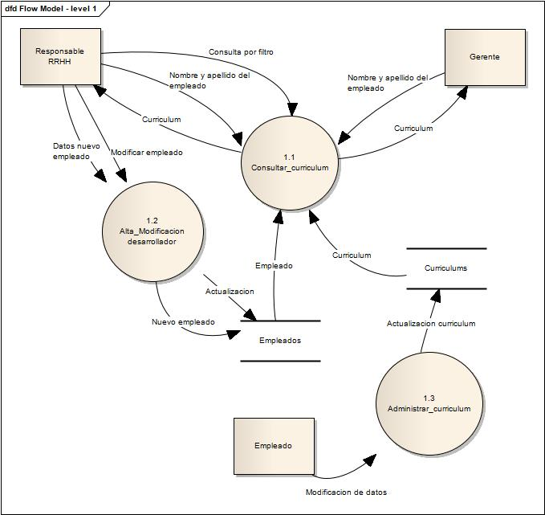

Ingeniería de Requerimientos en plataformas colaborativas
Me gustaria dar mi opinion sobre el tema del titulo de este post, pero primero voy separar algunas definiciones y conceptos para que quede todo en su lugar.

Git es un sistema de control de versiones al igual que Mercurial y Subversion, entre otros. La idea principal de un sistema de control de versiones es administrar los cambios en los archivos que componen el proyecto de software que se está desarrollando y mantener un historial de las versiones por la que va pasando un producto, de modo que puede ser muy bien identificada la persona o grupo de trabajo que hace un cambio sobre un archivo especifico permitiendo manejar el flujo de trabajo de una manera óptima.
Entonces sabiendo lo que es un sistema de control de versiones podemos decir que Github, al igual Bitbucket, son plataformas colaborativas para el desarrollo de software. Con estas herramientas se pueden acceder y colaborar en repositorios de software, formar parte de una comunidad de desarrollo, informar fallos o necesidad de nuevas funcionalidades mediante issues, distribuir software de codigo abierto.
Administrando cambios en los Requerimientos con plataformas colaborativas
A lo largo del ciclo de vida de un proyecto de software, los productos de software evolucionan. Desde la concepción del producto y la captura de requisitos inicial hasta la puesta en producción del mismo, se van realizando una serie de cambios, tanto en el código como en la documentación asociada.
Cada proyecto debe contar con un responsable, o grupo, de gestión de cambios, tanto de los requerimientos de software como de configuraciones de aplicación y cambios en el código fuente.
Una solicitud de cambio podría seguir los siguientes pasos y niveles de aprobación:
- Identificar y formalizar la solicitud de cambio mediante issues en plataformas como Github en el repositorio correspondiente al proyecto. Recordemos que la issue puede ser de tipo nueva funcionalidad, bug o extensión de funcionalidad.
- Valoración de la solicitud por el grupo encargado de gestión de cambios, creación de informe de valoración que puede contener, complejidad del cambio, impacto en la arquitectura del software y costos de desarrollo.
- Aprobación técnica de la solicitud de cambio, encargado al arquitecto del sistema.
- Aprobación funcional y contractual. Responsabilidad de jefe de proyecto, clientes y dueño de producto.
- Implementación del cambio.
- Pruebas y validaciones.
- Actualización de las bases documentales.
- Integración del cambio al repositorio de software.
- Implantación del cambio en producción.
CONCLUSIONES DEL TEMA
El sistema de control de versiones y plataformas como Github o Bitbucket han surgido para hacer seguimiento en los cambios del código fuente de un programa y crear un flujo de trabajo colaborativo, pero hoy en dia estas funcionalidades se han expandido hasta la documentación y porque no, los requerimientos del software, administrando los cambios que se realizan en los mismos.
Por ejemplo Perl 6 usa github para mantener la documentación de su lenguaje de programación.
Yendo un poco mas lejos mediante el uso de esta tecnologia se pueden escribir libros y manejar los cambios y el historial de las diferentes ediciones de una forma segura.
Libro escrito en LaTex mantenido en Github: https://github.com/HoTT/book.
Las herramientas estan ahi al alcance de nosotros, lo unico que tenemos que hacer es tomarlas usarlas.
Bibliografia consultada
- Junio Hamano, Linus Torvalds (2015). Git local-branching-on-the-cheap. Recuperado de http://git-scm.com/
- WDS, Strategic Software Solutions (2014). Procedimiento de control de versiones y gestión del cambio. Recuperado de http://es.slideshare.net/openerpquito
- Pressman (2005). Ingeniería del software, un enfoque practico. Mc Graw Hill.
Sistema de Gestion de Curriculums - DFD
Enunciado del sistema:
El Sistema de Gestor de Currículum será el responsable de gestionar los Currículum de los Trabajadores de la Empresa. La aplicación será capaz de almacenar información referente a la formación del personal, y que sea susceptible de ser utilizada por la empresa en la labor de búsqueda de perfiles para sus Proyectos. Los propios Trabajadores serán los que mantengan su currículum, y el Gerente será capaz de consultarlos desde cualquier lugar donde se encuentre, por lo que sería muy recomendable que la arquitectura de la aplicación sea web.
Diagrama de contexto:
El diagrama de contexto representa la vista de más alto nivel del sistema permitiendo visualizar sus principales interfaces.
Diagrama de nivel 1:

(primer post) Porqué Nikola Static Site and Blog Generator?

Nikola es un generador de blog estático, cada post y cada pagina del sitio se encuentran en un archivo html separado. Tampoco usa base de datos ni configuraciones complicadas en el servidor web.
Un sitio web estático es más seguro, utiliza menos recursos y no es necesario actualizar el framework en cada release.
Para empezar de la mejor manera a crear blogs, sitios personales, sitio para la presentacion de un proyecto de software, etc. se puede empezar leyendo el Handbook de Nikola, luego ya queda en tu imaginación lo que puedas hacer con el.
Existen temas ya desarrollados listos para usarlos o podes crear tus propios temas.